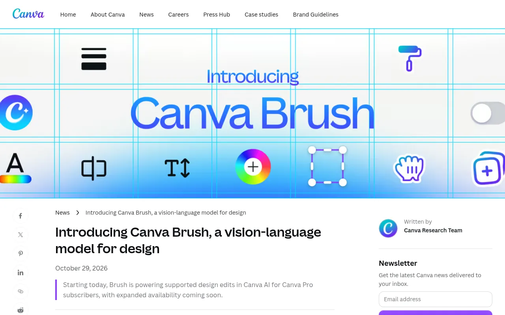
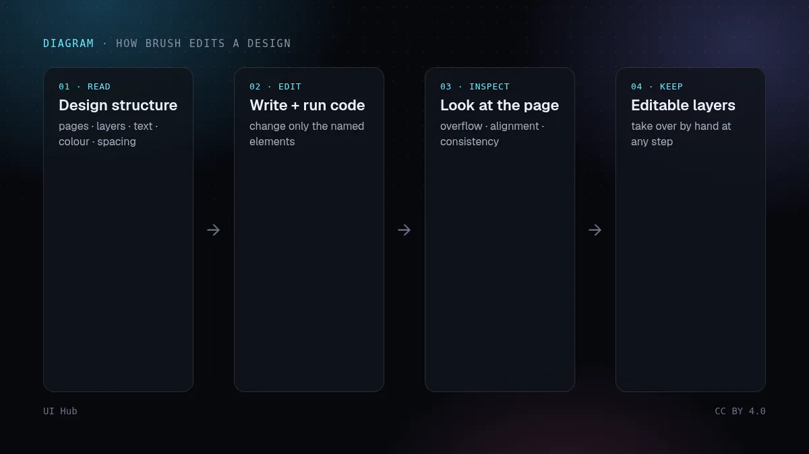
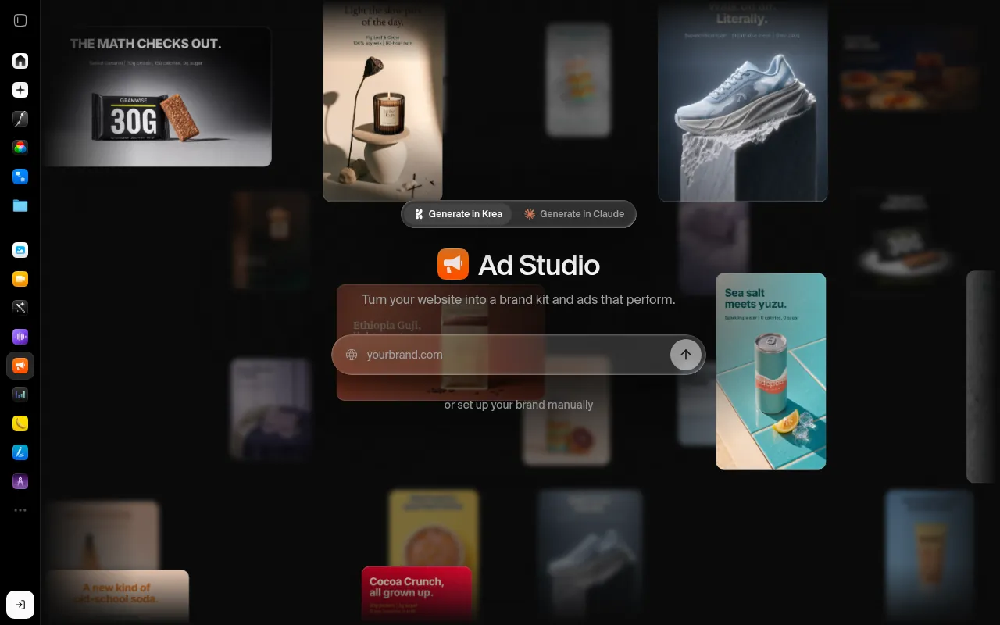

AI 设计里最贵的往往不是第一条提示，而是第二条：「只改标题」，结果工具连副标题一起重写，把 Logo 挪了位置，还换了一种蓝。10 月 29 日，Canva Research 发布了 Brush ，一个专门为这「第二条提示」打造的视觉语言模型。Canva 自己的说法很说明问题：生成设计已经很难，修改设计更难，因为模型既要知道改什么，也要知道什么必须原封不动 。

Canva Newsroom 2026 年 10 月 29 日发布 Canva Brush（用于修改设计的视觉语言模型）的文章 · 截图：Canva Newsroom（www.canva.com ），2026-10-30 截取，版权归原站所有 Brush 是什么
是修改模型，不是图像模型。 Brush 会看一份现有的 Canva 设计，弄清它的结构，再按你的要求修改，小到一行文案，大到整份演示文稿的每一页。它比 Canva 的图像生成模型 Canva Craft 晚一周推出；Canva 的分工是：Craft 负责生成图像，Brush 负责把图像周围的设计改好。它靠写代码来改。 在对话背后，Brush 跑的是一个智能体循环：写代码、运行代码去调整设计元素，再检查渲染出来的页面，决定下一步。结果是普通的 Canva 图层，文字、图片、颜色和版式都还能手动编辑。怎么训练的。 Canva 从一个开放权重模型出发，用真实的设计和修改任务做后训练，数据来自设计专业知识和自愿参与改进的用户的匿名数据，再加上大规模强化学习。奖励会评估视觉质量、版式是否符合设计原则、任务是否真的完成，而「好」的标准由 Canva 的专业设计师来定。可用范围。 Canva Pro 用户，在 Canva AI 中用于支持的修改：打开或附上一份设计，在 Canva AI 的模型下拉菜单里选 Brush 。更大范围开放已承诺，但没有日期。按 Canva 自己列的清单，目前还缺：品牌套件（Brand Kit）支持、引用附件，以及对图片密集版式的更好处理。
循环示意：读取设计结构、写并运行代码修改元素、检查渲染后的页面、决定下一步；产出仍是可编辑图层 · 示意图：UI Hub 原创，CC BY 4.0 这些数字能说明什么
Canva 称，Brush 在一般修改任务上比自家上一代设计智能体快最多 69%，每次修改成本低 46%；内部测试中，大多数修改任务的质量持平或更好，改风格和改尺寸适配新格式时表现最强。这些是厂商拿自己旧版智能体做的对比，不是公开基准，「最多」描述的是最好情况。更值得注意的是 Canva 为什么在意成本：用户以亿计，每次修改多几美分，就决定了一个功能能不能给所有人用。一个便宜到每次修改都能跑的小型专用模型，既是研究决定，也是产品决定。
同一个问题的两种解法
同一天晚上，Krea 发布了 Ad Studio ，由它第一个面向广告的 Krea 3「专家」模型驱动。粘贴品牌官网链接，它会在一两分钟内抽出品牌套件（Logo、颜色、字体），然后生成几十张广告。Krea 声称与品牌「完全一致」，目前还没有独立评测。两次发布放在一起，能看出 AI 设计的走向：Krea 靠先抽规则 来保证一致，Canva 靠从已有设计出发 。两者都在离开「空白画布 + 一句提示」，和我们在 Cursor、v0、Lovable 的可视化提示 、给 AI 视觉用的 JSON 品牌套件 里看到的方向一致。
我们的看法
在真实图层上、通过代码来改的修改模型，架构是对的：修改变成了对具名元素的操作，可以限定范围、跨页重复、可以撤销，而不是生成一张只是「长得像」你设计的新图。对团队来说，最大的问题是还不支持品牌套件。现在 Brush 能看到你的设计，却看不到你的品牌规则，所以「保持品牌一致」仍然是你的事，最好的办法是把具体数值写进提示。把「改风格」和「改成 Instagram 尺寸」当作 Canva 自己点名的强项；在承诺的改进上线之前，处理图片密集的版式要更小心。
清单：只改你想改的修改提示
写明范围。 哪几页、哪些元素：「第 2–5 页的标题」，而不是「这份演示文稿」。写明哪些不能动。 正文、图片、Logo 位置、页面顺序。修改模型有多精确，取决于你的「保持」清单。给数值，不给形容词。 色值、字体名和字号，好过「更高级一点」，尤其是在模型还读不到你的品牌套件的时候。一条提示一个意图。 只有统一的改动（所有标题）才批量做；混合需求拆成几轮，每轮都能检查。改格式时说清删什么。 一页幻灯片改成 1080×1350 的帖子，应该删字，而不是把字缩小。大范围修改前先复制一份。 多页修改最容易藏着没要求的偏移，留着原稿好对比。检查你没提到的页面。 看有没有文字溢出、对比度低于 4.5:1、对齐被破坏，以及范围之外的改动。最后手动收尾。 产出是普通图层，最后 10% 在编辑器里改比再写一条提示更快。范围： 第 2–5 页 · 仅幻灯片标题
修改： 字体 → Playfair Display 40 · 颜色 #1F2A44
保持： 正文 · 图片 · Logo 位置 · 页面顺序
检查： 标题不超过 2 行 · 对比度 ≥ 4.5:1 · 其他都没动
Krea Ad Studio 页面：粘贴品牌官网生成品牌套件，再生成广告 · 截图：Krea（www.krea.ai ），2026-10-30 截取，版权归原站所有 UI Hub 能帮什么
「保持」清单在你的数值已经有名字时最好用。给智能体的设计 Token 讲了怎么把它们写下来，用 Lint 把智能体拉回你的设计系统 讲了 AI 修改之后怎么抓住一次性数值。想用「指」代替「描述」，见指出来，而不是描述 ；设计工具如何向外部智能体开放，见驱动设计工具的智能体 。